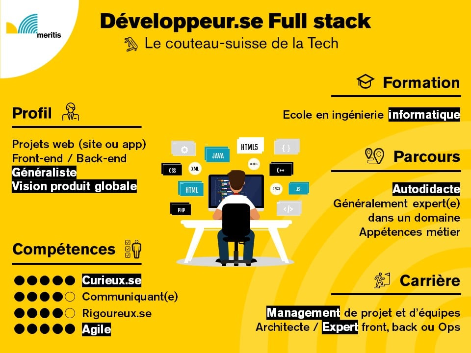

Un développeur full-stack est un professionnel polyvalent qui maîtrise à la fois le développement front-end (côté client) et back-end (côté serveur) d'une application ou d'un site web. Il est capable de gérer l'interface utilisateur ainsi que la logique serveur, les bases de données, et les API, ce qui lui permet de travailler sur l'ensemble du projet, du design à l'architecture logicielle. Un développeur full-stack utilise des technologies comme HTML, CSS, JavaScript pour le front-end, et des langages comme Python, Java, PHP ou Node.js pour le back-end. Cette polyvalence permet au développeur full-stack d'avoir une vision globale du projet et de prendre en charge diverses tâches, ce qui en fait un profil très recherché dans le développement web. Il collabore souvent avec des équipes multidisciplinaires pour gérer efficacement tous les aspects d'une application, des interactions utilisateur à la gestion des données.
|  |